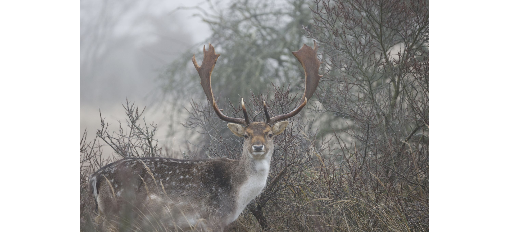

Dama dama

Vous pouvez trouver plus d’informations sur daim sur le portal
biodiversité flamande (notez que ces informations sont actuellement
disponible uniquement en néerlandais).
Plus d’informations:
portal
biodiversité flamande
Daim est classé comme espèce gibier en Flandre. Vous trouverez plus
d'informations sur la gestion et les dommages en Flandre sur la page
gestion
de la faune sauvage (à noter que ces informations ne sont
actuellement disponibles qu` en néerlandais)